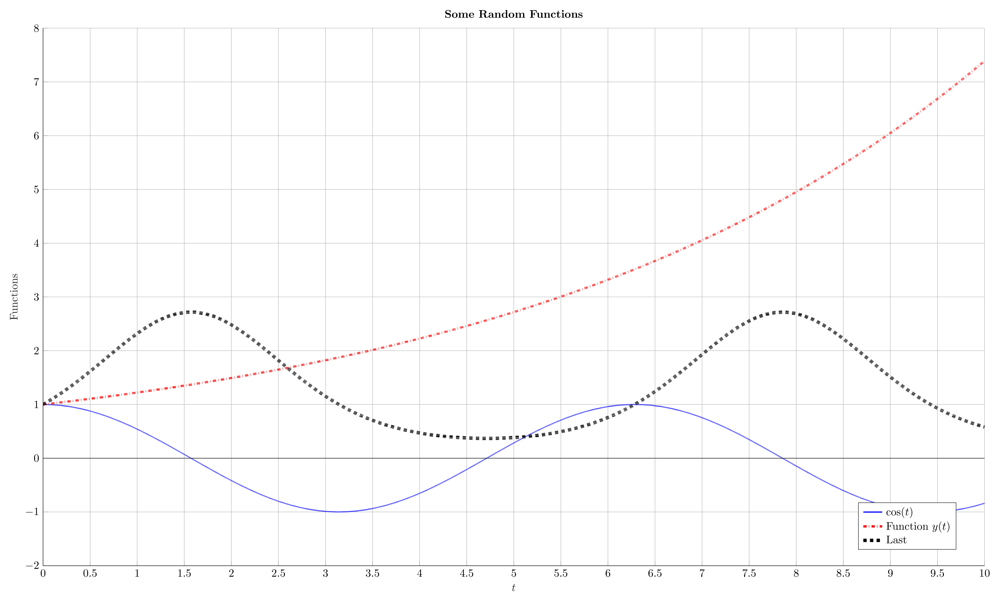

Appendix D — Plotting in MATLAB
D.1 Forming Lists for Plotting
Suppose the function \(x^3\) is to be plotted. First of all, a range of \(x\) values is needed, so if the function needs to be plotted in the interval \([-2,2]\), then a vector needs to be formed that spans this particular domain, the more points there are, the smoother the function will be. This can be in done by using, say, x=-2:1:2 which produces a vector x with 5 points, namely x=[-2 -1 0 1 2].
Secondly, the values on the \(y\)-axis need to be formed. For every \(x\) value, the value on the \(y\) axis will be at \(x^3\), this can be done using elementwise exponentiation as y=x.^3. In this case, the x and y vectors will be x=[-2 -1 0 1 2] and y=[-8 -1 0 1 8].
Now the plotting can commence. The plot function takes two arguments, the first is the set of coordinates on the horizontal axis and the second is the corresponding set of coordinates on the vertical axis. The plot function then plots the first against the second to form a set of points and connects them with lines. In other words, plot(x,y) draws points at the coordinates \((x(1),y(1))=(-2,-8)\), \((x(2),y(2))=(-1,-1)\), \((x(3),y(3))=(0,0)\), etc. and draws a line that connects all these points in the order they appear in.

Clearly, 5 points is not enough to plot a function accurately, so the domain vector \(x\) must be made finer by choosing smaller increments by saying something like x=-2:0.1:2 (in this case, x=[-5 -4.9 -4.8 -4.7 ... 4.7 4.8 4.9 5]). A very convenient way of achieving this is by using the linspace function where linspace(a,b) forms a vector between a and b with 100 equally spaced points. If a different mesh is required, then add an extra argument n as linspace(a,b,n), this forms a vector between a and b consisting of n equally spaced points. Therefore, the range of \(x\) values can be refined as x=linspace(-2,2).

Notice that the semicolons are placed since the output does not need to be seen and it is therefore suppressed, otherwise MATLAB will output all 100 terms of x and y which not necessary.
D.2 Line Properties
The plot function has many additional options that can change the plotting colour, shape, style, line widths and many more (these can be referred to by simply typing help plot into the command window). Some of these options can be incorporated into a plot by adding them into the plot function itself as additional inputs as plot(x,y,'Color','r','LineStyle','-','LineWidth',2).
Some of the available colours are:
| Colour | 'Color' Syntax |
|---|---|
| red | 'r' |
| blue | 'b' |
| green | 'g' |
| cyan | 'c' |
| magenta | 'm' |
| yellow | 'y' |
| black | 'k' |
| white | 'w' |
Some of the available line styles are:
| Line Style | 'LineStyle' Syntax |
|---|---|
| Solid | '-' |
| Dashed | '--' |
| Dotted | ':' |
| Chain | '-.' |
The colours and line styles can be combined into one, so if a blue solid line is needed, then it can simply be done by using '-b' and the plotting command will be plot(x,y,'-b').
D.3 Multiple Plots
It would stand to reason that if two different functions are to be plotted on the same figure space, say \(y=x^2\) as a red solid line and \(z=x^3\) as a blue dashed line for \(x \in [-5,5]\), then the following commands can be executed:
Unfortunately, MATLAB has a habit of overwriting plots every time the plot command is used, so in this case MATLAB would plot the graph of y then remove it and plot the graph of z. In order to avoid that, typing hold on before any plot command allows plotting more than one plot in the same figure space as well allowing some augmentation. This can be reverted by hold off.
>> hold on
>> x=linspace(-5,5);
>> y=x.^2;
>> z=x.^3;
>> plot(x,y,'-r')
>> plot(x,z,'--b')
>> hold off
D.3.1 Legends
When there is more than one line plotted in the same figure space, it is useful to have a legend to distinguish between the different plots. So if the functions \(y\) and \(z\) are plotted as above, then a legend can be added that labels them by simply using legend('Function y','Function z'). This labels the first plot with Function y and the second with Function z. Remember, quotation marks need to be inserted so they are displayed verbatim, otherwise MATLAB will produce an error since there are no variable with the names Function y or Function z.

D.4 Figure Properties
Some useful figure functions are:
clf: Clears the figure space.figure: Opens a new figure window.figure(n): Goes to figure window number \(n\) (and creates one if it is not open to begin with) and plots within that window.
The figures themselves can be augmented by introducing titles, grid lines and labelling the \(x\)- and \(y\)-axes, all these can be achieved as long as the hold on command is active:
- Title:
title('Put title here'), the title must be in quotation marks. - Grid:
grid onandgrid off. - \(x\)-axis:
xlabel('Label for x axis'). - \(y\)-axis:
ylabel('Label for y axis').
MATLAB usually adjusts the axes so that the graphs fit but sometimes, the axes need to be readjusted according the user’s preference, this can be done by using axis([left right down up] where left is the leftmost point, right is the rightmost point, etc.
D.5 Subplots
Plotting multiple functions is very useful only if the axes can be maintained but if they are different, then the information can be quite distorted when interpreted graphically. In this case, subplots can be used to display more than one plot on the same figure space but on different sections. The command subplot(a,b,n) generates a grid of size \(a \times b\) (\(a\) rows and \(b\) columns) and starts plotting in the \(n^{\text{th}}\) location where the top left is 1 and continues across the rows.
Suppose that for \(x \in [0,10]\), four functions are to be plotted: \(y=x^2\) on the top left, \(z=x^3\) on the top right, \(w=\sin(x)\) on the bottom left and \(u=\mathrm{e}^{x}\) on the bottom right. This means that a \(2 \times 2\) grid is needed so the first two terms in subplot are 2. The function \(y\) has to be plotted after subplot(2,2,1) while \(z\) is to be plotted after subplot(2,2,2) and so on.
>> x=linspace(0,10);
>> y=x.^2;
>> z=x.^3;
>> w=sin(x);
>> u=exp(x);
>> subplot(2,2,1)
>> plot(x,y)
>> subplot(2,2,2)
>> plot(x,z)
>> subplot(2,2,3)
>> plot(x,w)
>> subplot(2,2,4)
>> plot(x,u)
One issue in this case is that all the subplots will behave independently, so turning on the grid in one subplot will not do the same for all the rest. Therefore, operations such as grid on and hold on need to be done for each of the subplots individually.
D.6 Aesthetics
Fonts in figures can usually be an issue since the default setting may not be to the user’s liking. As seen in the figures above, the font on the axes is quite small which could make it difficult to read especially if the plots are to be in a report or dissertation. In that case, a special command needs to be run after hold on and before any plotting can commence. The command set(gca,'FontSize',20,'FontName','Times') sets the fontsize to 20 and the font to Times New Roman globally on all axes, legends and titles.
On MATLAB, the mathematical symbols will be displayed as regular text instead of mathematical symbols (like “x” instead of “\(x\)”). This can be adjusted by using LaTeX syntax by using dollar signs around the mathematical symbols. For example, the \(x\)- and \(y\)-axes can be labelled with “\(x\)” and “\(y\)” by using xlabel('$x$','Interpreter','Latex') and ylabel('$y$','Interpreter','Latex'). The same can be done in the title as title('Plot of $x$ Against $y$','Interpreter','Latex').
The legend entries need slightly more work; if two functions \(y\) and \(z\) are plotted, then they can be labelled in maths typesetting by first defining legend in terms of a placeholder variable as Leg=legend('Function $y$','Function $z$') then prescribing the interpreter as set(Legend,'Interpreter'). MATLAB usually places the legend on the top right corner by default but this can be modified by the 'Location' argument and change it to East, West, NorthEast, SouthWest and so on, meaning that the new prescription for the legend would be set(Legend,'Interpreter','Location','SouthWest').
Remember, this modification of font shapes, sizes and the different styles is only for aesthetic reasons and serves no purpose otherwise.
Suppose that the following need to be plotted:
- The function \(x(t)=\cos(t)\) for \(t \in [0,10]\) as a blue solid line of thickness 1.
- The function \(y(t)=\mathrm{e}^{0.2t}\) for \(t \in [0,10]\) as a red chain of thickness 2.
- The function \(z(t)=\mathrm{e}^{\sin(t)}\) for \(t \in [0,10]\) as a black dashed line of thickness 3.
- The legend appears in the bottom right corner and labels \(x(t)\) as “\(\cos(t)\)”, \(y(t)\) as “Function \(y(t)\)” and \(z(t)\) as “Last”.
- The title of the figure should be “Some Random Functions”.
- The horizontal axis labelled as “\(t\)”.
- The vertical axis labelled as “Functions”.
- The horizontal axis ranges from \(0\) to \(10\) and the vertical axis ranges from \(-2\) to \(8\).
- Axis lines are drawn to represent the horizontal and vertical axes.
Each of these can be executed separately by the following commands:
t=linspace(0,10);x=cos(t); plot(t,x,'-b','LineWidth',1)y=exp(0.2*t); plot(t,y,'-.r','LineWidth',2)z=exp(sin(t)); plot(t,z,'--k','LineWidth',3)Leg=legend('$\cos(t)$','Function $y(t)$','Last');set(Leg,'Interpreter','Latex','Location','SouthEast')title('Some Random Functions','Interpreter','Latex')xlabel($t$,'Interpreter','Latex')ylabel('Functions','Interpreter','Latex')axis([0 10 -2 8])plot([0 10],[0 0],'-k'); plot([0 0],[-2 8],'-k')
A MATLAB script can be written to execute all these in order:
clf % Clears the figure before plotting
hold on % Allows more than one plot in the same figure
grid on % Produces a grid
set(gca,'FontSize',20,'FontName','Times') % Sets the font golobally
t=linspace(0,10); % Horizontal axis values
x=cos(t); % Vector of values for the x function
y=exp(0.2*t); % Vector of values for the y function
z=exp(sin(t)); % Vector of values for the z function
plot(t,x,'-b','LineWidth',1) % Plots t against x
plot(t,y,'-.r','LineWidth',2) % Plots t against y
plot(t,z,'--k','LineWidth',3) % Plots t against z
title('Some Random Functions','Interpreter','Latex') % Title
xlabel('$t$','Interpreter','Latex') % Horizontal axis label
ylabel('Functions','Interpreter','Latex') % Vertical axis label
axis([0 10 -2 8]) % Sets the axes
plot([0 10],[0 0],'-k') % Plots the horizontal axis
plot([0 0],[-2 8],'-k') % Plots the vertical axis
Leg=legend('$\cos(t)$','Function $y(t)$','Last'); % Sets the legend
set(Leg,'Interpreter','Latex','Location','SouthEast'); % Sets the font, interpreter and location of the legend
All these commands can be executed in the command window rather than writing them in a script but if a mistake is made, then it cannot be undone and the entire stream of commands needs to be redone once again. Using a script on the other hand will allow for easy alteration.
D.7 Discrete Plots
The plot function does not just plot functions, all it needs are two vectors of the same length and it can plot them against one another. So if the graph is to be plotted as a series of points (discrete plot) rather than coordinates connected with a line, then the change in the plot function is quite straight forward, simply replace 'LineStyle' with 'MarkerStyle' and 'LineWidth' with 'MarkerSize'. This will use discrete points rather than connecting them with lines. The different marker styles are:
| Marker Style | 'MarkerStyle' Syntax |
|---|---|
| Dot \(\cdot\) | '.' |
| Cross \(\times\) | 'x' |
| Asterisk \(\ast\) | '*' |
| Circle \(\circ\) | 'o' |
| Crosshair \(+\) | '+' |
| Square \(\square\) | 's' |
| Diamond \(\diamond\) | 'd' |
| Pentagram \(\star\) | 'p' |
| Upward Triangle \(\triangle\) | '^' |
| Downward Triangle \(\triangledown\) | 'v' |
| Rightward Triangle \(\triangleright\) | '>' |
| Leftward Triangle \(\triangleleft\) | '<' |
The colours work in the same way. These discrete plots can be combined with the line plot all in one command, for example, to plot a function with a red dashed line connecting circles, the plot command will be plot(x,y,'--or').
Consider to the Collatz conjecture from Section C.2, suppose that the number of steps it takes to reach 1 is to be plotted against the starting values, say from 1 to \(N\) where \(N\) will be the input. This will require the use of many of the tools developed so far.
First of all, a function that takes in a starting value and outputs the number of steps is needed, which that has already been done in the code Collatz. Since the inputs will be all the numbers from 1 to \(N\), a for loop will be suitable for the job. Finally, the plot function with markers will be employed since connecting the points with lines will not make sense in this particular context.
In order for the plot function to work, it needs two vectors of the same length. For this particular example, the first vector is the list of numbers from 1 to \(N\), which will be labelled X and will be on the \(x\)-axis, and the second is the vector of the number of steps for a starting value to decrease to 1 and this is labelled Y. The terms in the vector Y will have to be calculated individually by using the Collatz function. Of course, since the size of Y is the same size a X, it can be initialised by using Y=zeros(size(X)), the terms can then be substituted after they have been calculated. The code to execute this plotting procedure is as follows:
function Plot_Collatz(N)
X=1:1:N; % List of starting values from 1 to N
Y=zeros(size(X)); % Initialise the vector Y
for i=X
[y]=Collatz(i); % Run the Collatz algorithm for the starting
% value i
Y(i)=y; % Record the the number of steps in the i-th
% element of the vector Y
end
clf
hold on
grid on
set(gca,'FontSize',20,'FontName','Times')
plot(X,Y,'.b','MarkerSize',10)
title(strcat('Steps of the Collatz Conjecture for Starting Points 1 to',' ',num2str(N)),'Interpreter','Latex')
xlabel('Starting Value','Interpreter','Latex')
ylabel('Number of Steps','Interpreter','Latex')
endThe code can now be run in the command window using Plot_Collatz(1000) will give the following plot:

There are a few things that need to be observed in the above code:
- In Line 4, the
forloop starts withi=X, this means that the values ofiwould run through all the values of the vectorXin order. So theforloop does not need to take terms from a uniform set but it can be from any set of values and those will be taken in the order they appear. - Line 6 runs the
Collatzfunction for the input valueito produce a valueyand this is then recorded in the vectorYin the \(i^{\text{th}}\) location in Line 8, henceY(i)=y. Of course there will be no issues there since the size ofYis known and has already been initialised in Line 3 as a vector of zeros of the same size asX, the values are then replaced by the desired terms. - Notice that here, the main function
Plot_Collatz(also known as the top level function) refers to another function, namelyCollatz. This code should be saved as a separate.mfile and has to be in the same directory asPlot_Collatz, otherwise the code will not work. An alternative would be to put theCollatzfunction after the end ofPlot_collatz.
- The
Collatzfunction requires a single input, but in some cases, there could be many inputs and many outputs, in that case when calling the function, the sequence of inputs and outputs must be in exactly the same order as it appears in the function itself.
D.8 Plot Cheat Sheet
| MATLAB Command | Purpose |
|---|---|
clf |
Clear figure space |
figure |
Opens a new figure space |
figure(n) |
Plots in figure space n |
hold on |
Allows more than one plot to be drawn on the same figure |
hold off |
Cancels hold on |
grid on |
Turns on the plot grid |
grid off |
Turns off the plot grid |
plot([a,b],[c,d]) |
Plots a straight line from point (a,c) to (b,d) |
set(gca,'FontSize',20) |
Sets the global font size to 20 |
set(gca,'FontName','Times') |
Sets the global font to Times |
axis([left right down up]) |
Sets the axes where the \(x\)-axis goes from left to right and the \(y\)-axis from down to up |
title('Plot') |
Adds the title “Plot” to the figure |
xlabel('x') |
Labels the \(x\)-axis with “x” |
xlabel('$x$','Interpreter','Latex') |
Labels the \(x\)-axis with “\(x\)” |
Leg=legend('Plot 1','Plot 2',...) |
Gives the legend a handle “Leg” for further modification and labels the first plotted line as “Plot 1”, the second as “Plot 2”, etc. |
set(Leg,'Interpreter','Latex') |
Renders the legend in LaTeX, just like the labels |
x=linspace(a,b) |
Generates a vector x with 100 points from a to b |
x=linspace(a,b,n) |
Generates a vector x with n points from a to b |
plot(x,y) |
Plots the vector x against the vector y as long as they are of the same size |
plot(x,y,'-b') |
Plots x against y with a blue line (continuous) |
plot(x,y,'-b','LineWidth',2) |
Plots x against y with a blue line of thickness 2 |
plot(x,y,'xk') |
Plots x against y with black crosses (discrete) |
plot(x,y,'xk','MarkerSize',10) |
Plots x against y with black crosses of size 10 |